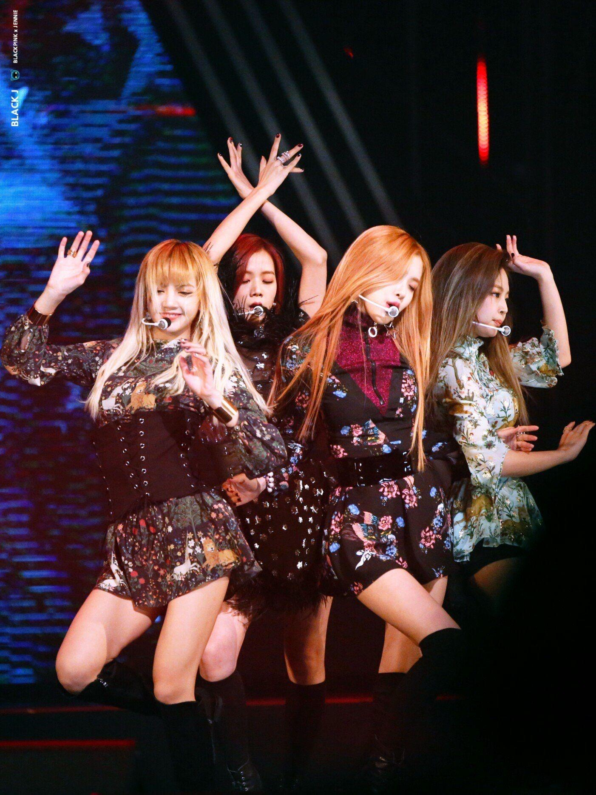
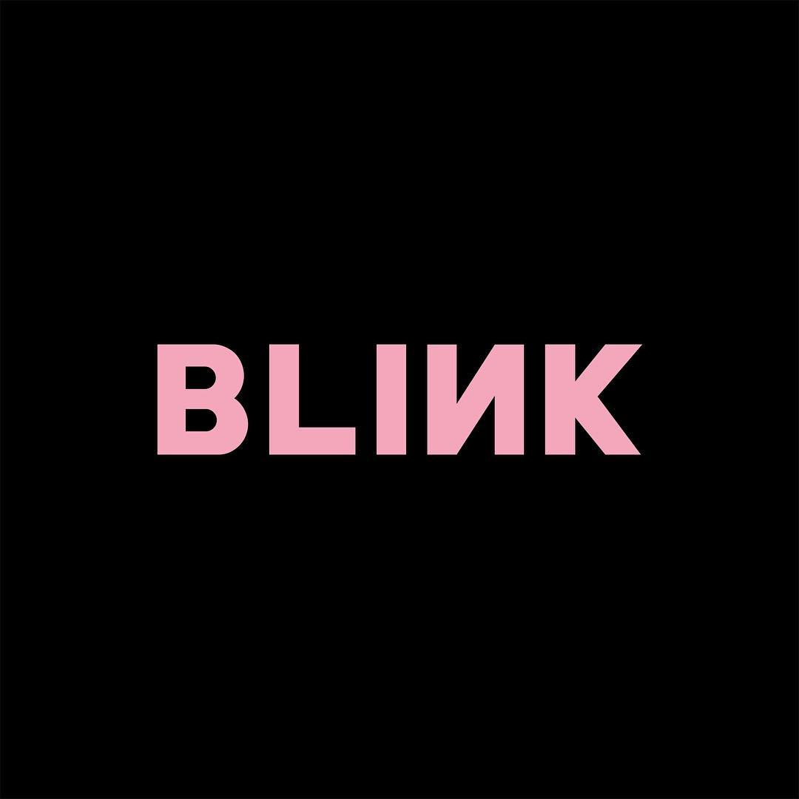
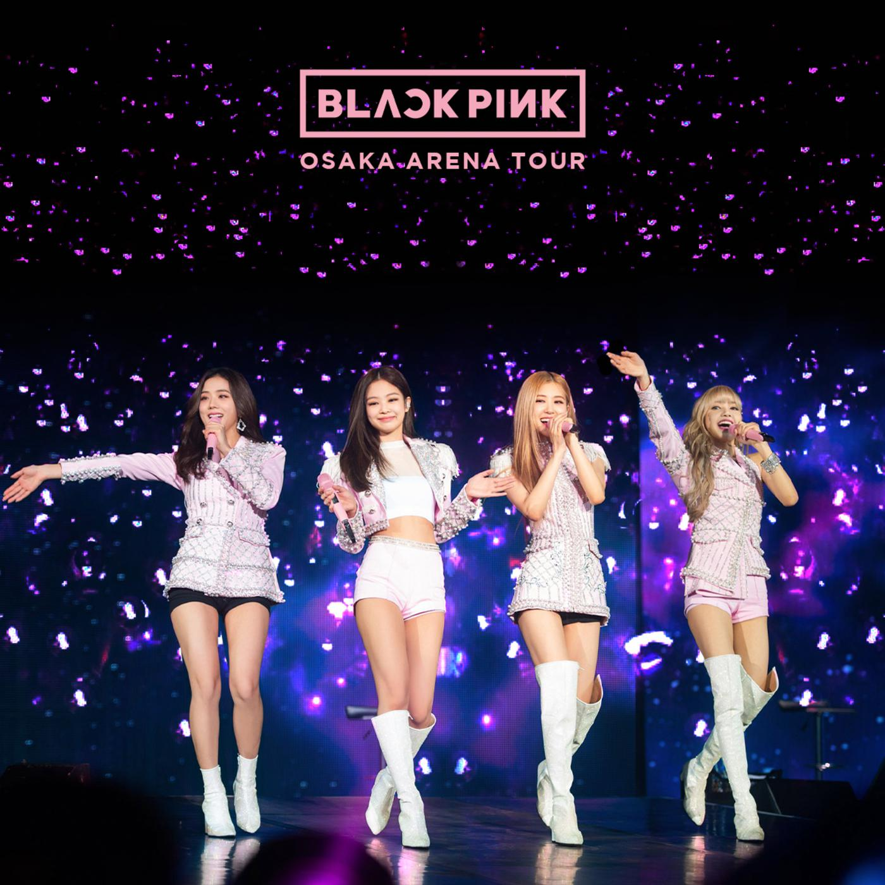
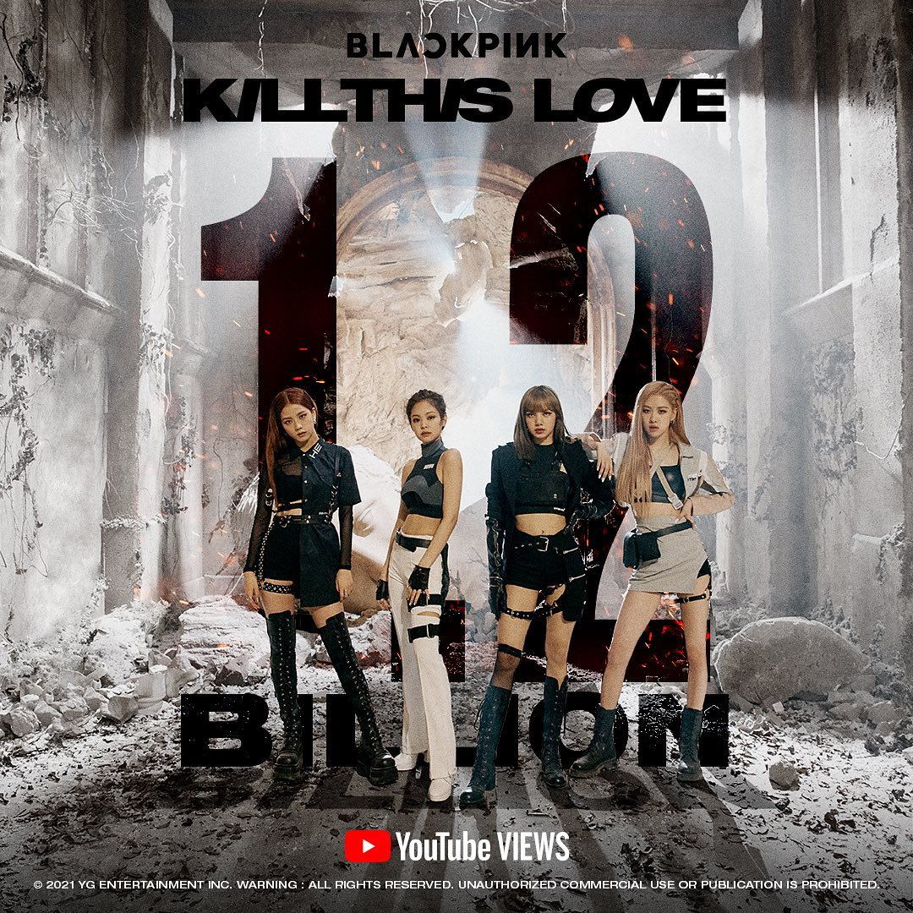
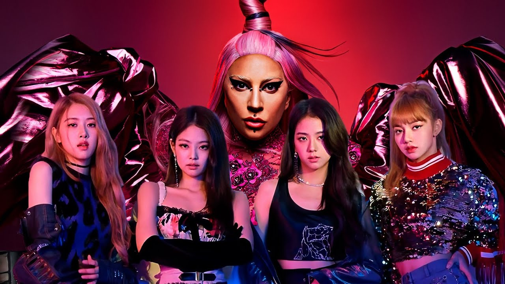
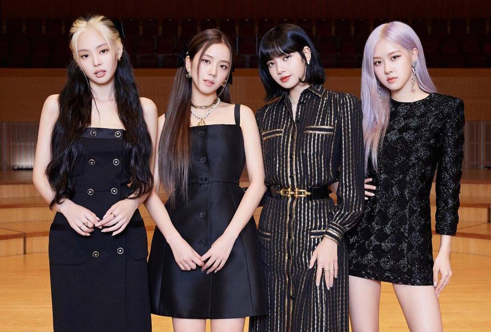
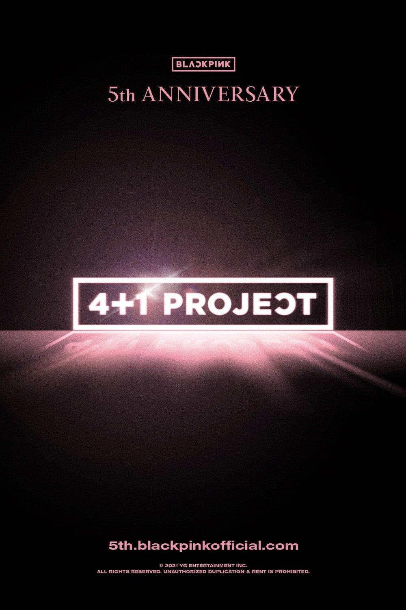

Ngày 8/8/2016, làng giải trí Hàn Quốc chứng kiến màn ra mắt ấn tượng của 4 cô gái quyền lực nhà YG sau 7 năm kể từ thời kỳ hoàng kim của đàn chị 2NE1. Sở hữu ngoại hình xinh đẹp, cá tính cùng phong cách âm nhạc độc đáo, có phần nổi loạn, BLACKPINK được mệnh danh là “tân binh khủng long” khi liên tục chiếm lĩnh các bảng xếp hạng âm nhạc trên thị trường trong và ngoài nước chỉ trong thời gian ngắn. Chỉ sau 13 ngày ra mắt, 4 cô gái đã nhanh chóng giành chiến thắng đầu tiên trên sân khấu Inkigayo với ca khúc Whistle nằm trong album đầu tiên Square One và xuất sắc giành giải Best New Artist tại Melon Music Awards.
Cuối năm 2016, BLACKPINK tiếp tục ra mắt album thứ hai Square Two với hai ca khúc Playing with Fire và Stay. Playing with Fire nhanh chóng leo lên vị trí quán quân trên World Digital Song Chart của Billboard, phủ sóng các bảng xếp hạng trên toàn thế giới, đưa BLACKPINK trở thành nhóm nhạc nữ K-Pop đầu tiên lọt vào bảng xếp hạng Canadian Hot 100. Sở hữu thành tích đáng nể, BLACKPINK đã được Billboard vinh danh là một trong những nhóm nhạc K-Pop mới xuất sắc nhất năm 2016.
Năm 2017 không chỉ đánh dấu màn comeback ấn tượng của 4 cô gái nhà YG với ca khúc As If It’s Your Last phá vỡ nhiều kỷ lục trên các bảng xếp hạng mà còn là một năm ý nghĩa đối với người hâm mộ khi fandom của BLACKPINK chính thức được đặt tên là BLINK. Vào tháng 7, BLACKPINK tổ chức một buổi showcase debut ở Tokyo với sự tham gia của hơn 14.000 khán giả và chính thức ra mắt tại Nhật Bản vào tháng 8 với đĩa đơn mở rộng mang tên Blackpink, gồm phiên bản tiếng Nhật của các bài hát trong album Square One, Square Two và ca khúc As If It’s Your Last.
Tiếp nối những thành công rực rỡ sau hai năm ra mắt và đáp lại tình cảm của người hâm mộ, BLACKPINK chào đón năm 2018 với chương trình thực tế đầu tiên mang tên Black Pink House xoay quanh những khoảnh khắc đời thường, gần gũi của 4 cô gái trẻ. Không để người hâm mộ phải chờ đợi lâu, BLACKPINK tiếp tục phát hành mini album Square Up với ca khúc chủ đề Ddu-Du Ddu-Du gặt hái được nhiều thành tích ấn tượng trên các bảng xếp hạng quốc tế như đứng đầu World Digital Song Sales, đứng thứ 2 trên bảng xếp hạng QQ Music của Trung Quốc, là ca khúc đầu tiên của nhóm nhạc nữ K-Pop lọt vào Official Trending Chart của Anh Quốc và là MV có lượt xem nhiều nhất trên YouTube trong 24h đầu tiên.
Vào tháng 7/2018, các cô gái chính thức có chuyến lưu diễn đầu tiên BLACKPINK Arena Tour 2018 ở Nhật Bản với 7 concert tại Osaka, Fukuoka, Chiba và kết thúc tại sân vận động mái vòm Kyocera Osaka vào ngày 24/12 như một món quà Giáng Sinh dành tặng người hâm mộ.
Không chỉ giành giải thưởng tại các chương trình trao giải lớn cuối năm ở Hàn Quốc như Top 10 Artists và Best Female Dance tại Melon Music Awards, BLACKPINK tiếp tục khởi động chuyến lưu diễn vòng quanh thế giới In Your Area World Tour, mở màn với concert đầu tiên tại Hàn Quốc vào ngày vào ngày 10/11/2018 sau hơn 2 năm ra mắt. Chuyến lưu diễn kéo dài đến đầu năm 2020 gồm 36 đêm diễn qua 4 châu lục: Bắc Mỹ, châu Âu, châu Đại Dương, châu Á, trở thành tour diễn đạt doanh thu cao nhất và thành công nhất trong lịch sử nhóm nhạc nữ K-Pop.
Năm 2019, song song với những thành tựu gặt hái từ chuyến lưu diễn In Your Area World Tour, BLACKPINK lần đầu ra mắt ở Hoa Kỳ tại Grammy Artist Showcase 2019 của Universal Music Group và lần lượt xuất hiện trong các chương trình truyền hình Good Morning America và The Late Show with Stephen Colbert. Cũng trong năm này, mini album Kill This Love được phát hành và nhanh chóng chiếm lĩnh các vị trí hàng đầu trên bảng xếp hạng quốc tế. Vinh dự là nghệ sĩ K-Pop đầu tiên biểu diễn tại lễ hội âm nhạc Coachella của Mỹ, danh tiếng của 4 cô gái ngày càng được phủ sóng rộng rãi trên toàn cầu sau màn trình diễn sống động, đầy ấn tượng được đánh giá cao bởi các nhà phê bình và người hâm mộ.
Mặc dù khoảng thời gian này toàn thế giới bị ảnh hưởng bởi dịch bệnh COVID-19 nhưng 4 cô gái vẫn luôn nỗ lực hết mình và gặt hái được nhiều thành tích đáng tự hào.
Chỉ trong năm 2020, BLACKPINK đã có cơ hội hợp tác với hai nghệ sĩ hàng đầu là Lady Gaga trong ca khúc Sour Candy và Selena Gomez trong ca khúc Ice Cream. Hai ca khúc nhanh chóng lọt vào BXH Hot 100 của Billboard – Sour Candy ở vị trí 33 và Ice Cream ở vị trí 13, không chỉ là thành tích nổi bật nhất trong sự nghiệp của 4 cô gái mà còn giúp BLACKPINK giữ vững kỷ lục trên BXH Hot 100.
Năm 2020 cũng được xem là một năm thành công rực rỡ của BLACKPINK với màn tái xuất ngoạn mục, phá vỡ kỷ lục Guinness Thế giới với MV How You Like That nằm trong album The Album. Không chỉ nhanh chóng đạt được số lượng người xem kỷ lục chỉ sau 24h phát hành trên YouTube, How You Like That xuất sắc đứng đầu iTunes Song tại 67 quốc gia và vùng lãnh thổ trên thế giới.
Bên cạnh đó, chương trình thực tế thứ hai mang tên 24/365 with BLACKPINK được phát sóng mang đến cho người hâm mộ cái nhìn chân thực về các hoạt động đời thường của các cô gái thông qua vlog cũng như công tác chuẩn bị cho album The Album. Đặc biệt, bộ phim tài liệu BLACKPINK: Thắp sáng bầu trời được công chiếu trên Netflix vào tháng 10/2020 kể về những khó khăn của 4 cô gái trong thời gian là thực tập sinh cho đến giây phút tỏa sáng trên sân khấu đã nhận được nhiều phản hồi tích cực từ khán giả.
Bên cạnh công tác chuẩn bị cho màn tái xuất dự kiến vào tháng 10/2021 cùng những hoạt động đơn lẻ của các thành viên, YG Entertainment còn có một dự án đặc biệt mang tên 4+1 Project để người hâm mộ cùng BLACKPINK kỷ niệm sinh nhật lần thứ 5 vào ngày 8/8/2021. Hé lộ ý nghĩa của tên dự án này, BLACKPINK cho biết để 4 cô gái tiếp tục kiên cường, vững vàng trên con đường chạm đến thành công, luôn có 1 cộng đồng BLINK sẵn sàng ủng hộ hết mình và vững tin vào họ.
Nguồn: elle.vn